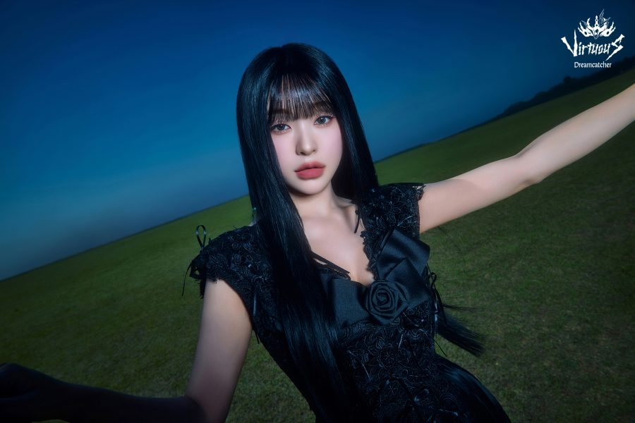

Gahyun

Lee Ga Hyun (이가현), mais conhecida como Gahyun, nasceu no dia 03 de Fevereiro de 1999, em Seongnam - Coreia do Sul.
Alguns fatos sobre a Gahyun:
- Ela é a sub-vocalista e lead rapper do grupo
- É a "maknae" do grupo, a mais nova
- Foi estudante de honra por 3 anos
- Foi trainee por 6 meses
- Consegue imitar a risada do Bob Esponja
Redes sociais da Gahyun: Instagram
Voltar